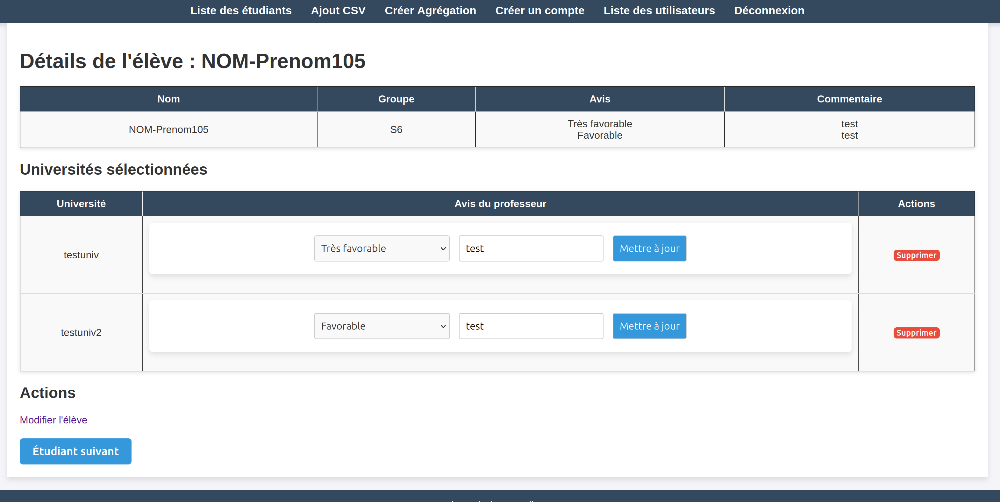

Contexte du projet:
La SAE DOCKER est une SAÉ transversale de troisième année de BUT Informatique regroupant l’ensemble des compétences de l’année. Elle a été réalisée en groupe de six étudiants, tous développeurs, avec pour objectif de proposer une solution proche d’un contexte professionnel réel. Le projet avait pour but de permettre aux étudiants de déployer facilement des environnements Docker isolés via une interface web, en s’appuyant sur un serveur Proxmox afin de garantir l’isolation et la gestion des ressources. Le public cible du projet est composé d’étudiants, d’enseignants et d’administrateurs, chacun disposant de droits adaptés à son rôle.
